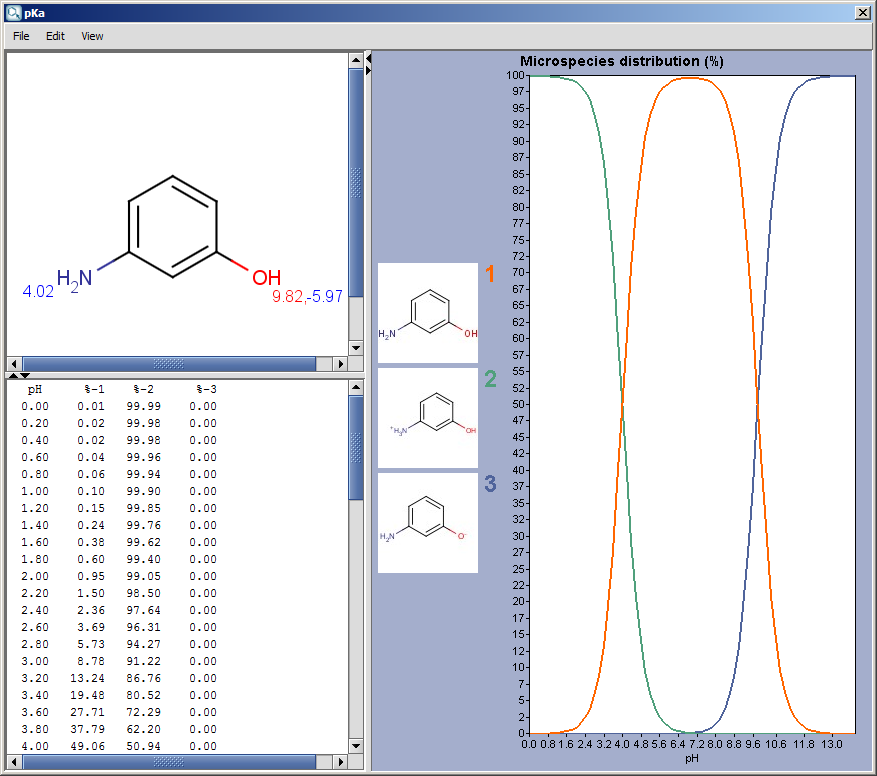
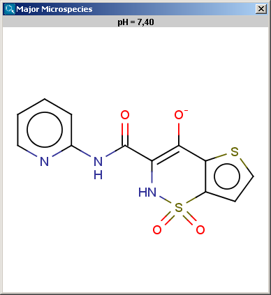
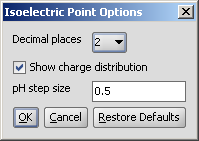

Most molecules contain some specific functional groups likely to
lose or gain proton under specific circumstances. Each ionization
equilibrium between the protonated and deprotonated forms of the molecule
can be described with a constant value called pKa. The
pKa plugin calculates the pKa values
of all proton gaining or losing atoms on the basis of the partial
charge distribution.
Learn more about how the plugin calculates pKa.
We introduced the trainable pKa calculation from version 5.2! You can define a file with experimental data, and use its values for the correction of calculations.
The pKa options panel offers different parameters to set:
Results are shown in a separate window. When checking the Show microspecies distribution box, this window appears (for the explanation about the red&blue color representation of the pKa values next to the protonable groups read this document):
|  |
The chart shows the microspecies distribution curves vs. pH. The microspecies images are shown in the legend. When clicking on an image, the corresponding microspecies molecule is displayed in the upper-left viewer. (The viewer can be detached from the chart panel by double clicking in it, or else by selecting Open Viewer from the View menu.) The original molecule with the pKa values is shown when clicking on the chart outside of the legend image areas, or else when selecting pKa Values from the View menu.
Note: If there are 8 or less ionizable atoms in the molecule, then microspecies distribution is displayed on the chart, otherwise macrospecies distribution is shown. Images of microspecies are displayed only on the microspecies distribution chart; on macrospecies distribution chart the formal charges of the macrospecies are shown.
The contents of the text field can be copied to the clipboard by Ctrl+C, the structure field offers a context menu from MarvinView.
When moving the mouse over one of the microspecies images, the corresponding (pH : % of the microspecies) coordinates appear on the curves.
Calculation with the option 'Take major tautomeric form' gives same values for different tautomers.
 |
Determines the major protonation form at a specified pH.
The pH can be set in the Major Microspecies Options panel, the default pH is 7.4.
 |
The result is shown in a separate window, indicated the pH value and the structure in a MarvinView field.
|  |
The contents of the text field can be copied to the clipboard by Ctrl+C, the structure field offers a context menu from MarvinView.
Net charge of an ionizable molecule is zero at a certain pH. This pH is called the isoelectric point, also referred to as pI. Isoelectric point plugin calculates gross charge distribution of a molecule as function of pH.
The Isoelectric Point Options panel contains the pH, and the option to switch off the charge distribution chart of the charge of the molecule vs. pH:
|  |
The result is shown in a separate window, containing the molecule structure at the pI and the value of pI. If the Show charge distribution checkbox was checked, the charge vs. pH curve is displayed. When moving the mouse over the dots in the curve, the coordinates (pH : charge) appear.
 |
The contents of the text field can be copied to the clipboard by Ctrl+C, the structure field offers a context menu from MarvinView.